1. 写在前面
今天分享的题目是leetcode234题。即给你一个链表，判断它是不是回文的。虽然它是一个简单题目，但是里面还有很多值得学习的要点。
2. 使用栈
回文的含义是正着反着念都是一样的，如果我们可以的得到链表逆序遍历的结果，那么就比较容易判断了。想到”逆序“，我们考虑到了栈“后进先出”的特性，于是我们可以使用栈来实现链表的逆序遍历。我们首先遍历链表，把结果都加入一个栈中，然后再次遍历链表，每次遍历到一个元素的时候，就从栈中弹出一个元素和它比对，如果不一样那么说明不是回文的。因为从栈中弹出的顺序刚好是链表逆序遍历的结果，如果都能比对成功，那么说明链表是回文的。比较容易理解，我就不画图了，代码如下：
1
2
3
4
5
6
7
8
9
10
11
12
13
14
15
16
17
18
19
20
21
22
| import java.util.Stack;
public class PalindromeLinkedListUsingStack {
public static boolean isPalindrome(ListNode head) {
Stack<Integer> stack = new Stack<>();
ListNode cur = head;
for(; cur != null; cur = cur.next) stack.push(cur.val);
for(cur = head; cur != null; cur = cur.next, stack.pop()) {
if(cur.val != stack.peek()) return false;
}
return true;
}
static class ListNode {
int val;
ListNode next;
ListNode(int v) {
this.val = v;
}
}
}
|
时间复杂度$O(N)$，空间复杂度$O(N)$。如果是笔试，做到这里就可以结束了，但是如果在面试中，面试官一定会问你，有没有更加省空间的办法？下面就来整活了。
3. 反转链表
我们如果可以把链表的右半部分逆序，同时从左边和右边开始遍历，如果链表是回文的，那么一定可以一一对应。

如果想要把链表的右半部分反转，首先我们需要找到链表的中点，通过观察可以看出，如果是奇数个元素，就要找到中点的位置，偶数个则需要找到上中点。那么如何找到链表的中点呢？请记住下面的算法。
1
2
3
4
5
6
7
8
9
10
11
12
13
14
15
16
17
18
19
20
| public class FindMedian {
public static ListNode find(ListNode head) {
if(head = null) return null;
ListNode slow = head, fast = head;
while(fast.next != null && fast.next.next != null) {
slow = slow.next;
fast = fast.next.next;
}
return slow;
}
static class ListNode {
int val;
ListNode next;
ListNode(int v) {
this.val = v;
}
}
}
|
这个方法大家可以下去验证两个例子，记住即可。
如果找到了中点元素$median$，那么我们需要把$median.next$反转，拿到反转后的链表逐一比对即可。注意如果发现链表不是回文的，一定要暂时记住结果，把链表再反转回来后返回，一般来说是不可以修改输入的数据的。
代码如下：
1
2
3
4
5
6
7
8
9
10
11
12
13
14
15
16
17
18
19
20
21
22
23
24
25
26
27
28
29
30
31
32
33
34
35
36
37
38
39
| public class PalindromeLinkedListUsingReverse {
public static boolean isPalindrome(ListNode head) {
if(head.next == null) return true;
ListNode slow = head, fast = head;
while(fast.next != null && fast.next.next != null) {
slow = slow.next;
fast = fast.next.next;
}
ListNode head1 = head, head2 = reverse(slow.next), join = head2;
boolean ans = true;
while(head2 != null && ans) {
if(head1.val != head2.val) ans = false;
head1 = head1.next;
head2 = head2.next;
}
reverse(join);
return ans;
}
ListNode reverse(ListNode head) {
ListNode pre = null, cur = head, next;
while(cur != null) {
next = cur.next;
cur.next = pre;
pre = cur;
cur = next;
}
return pre;
}
static class ListNode {
int val;
ListNode next;
ListNode(int v) {
this.val = v;
}
}
}
|
时间复杂度$O(N)$，空间复杂度$O(1)$。